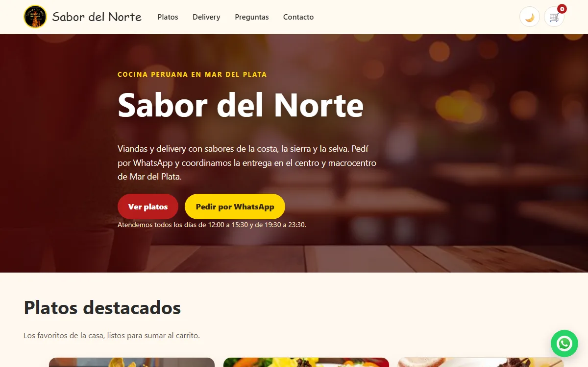
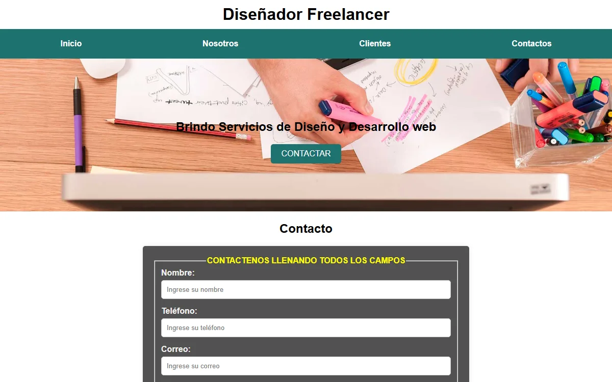
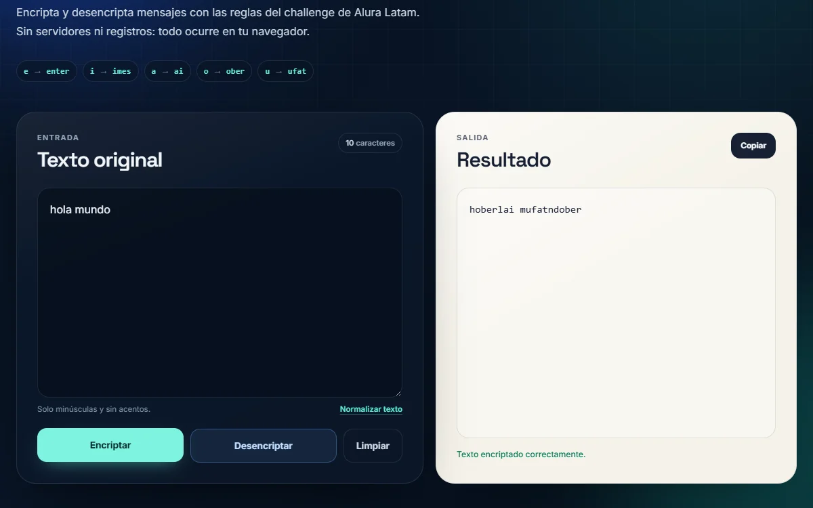
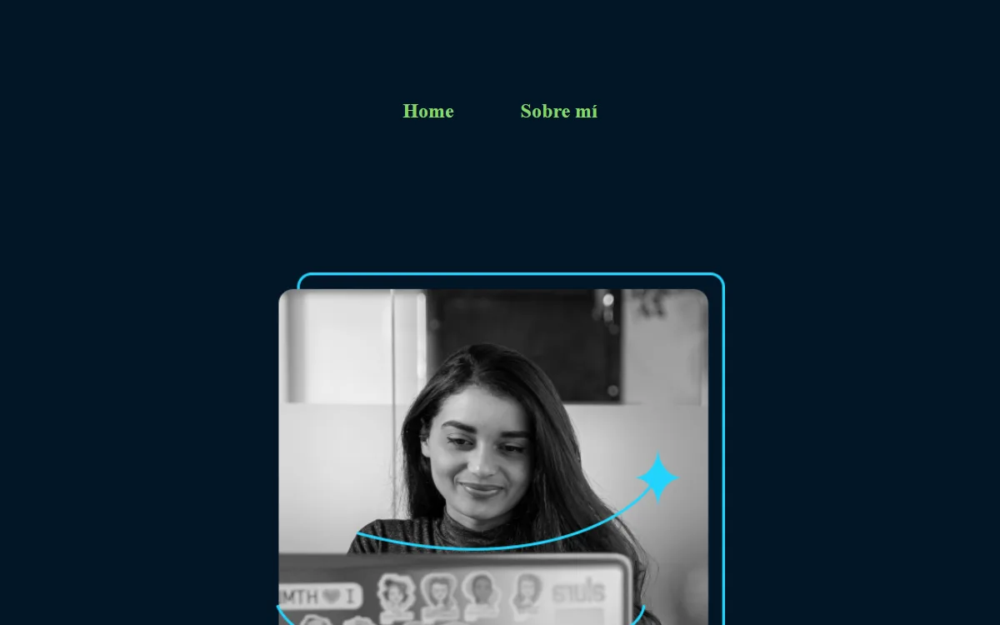
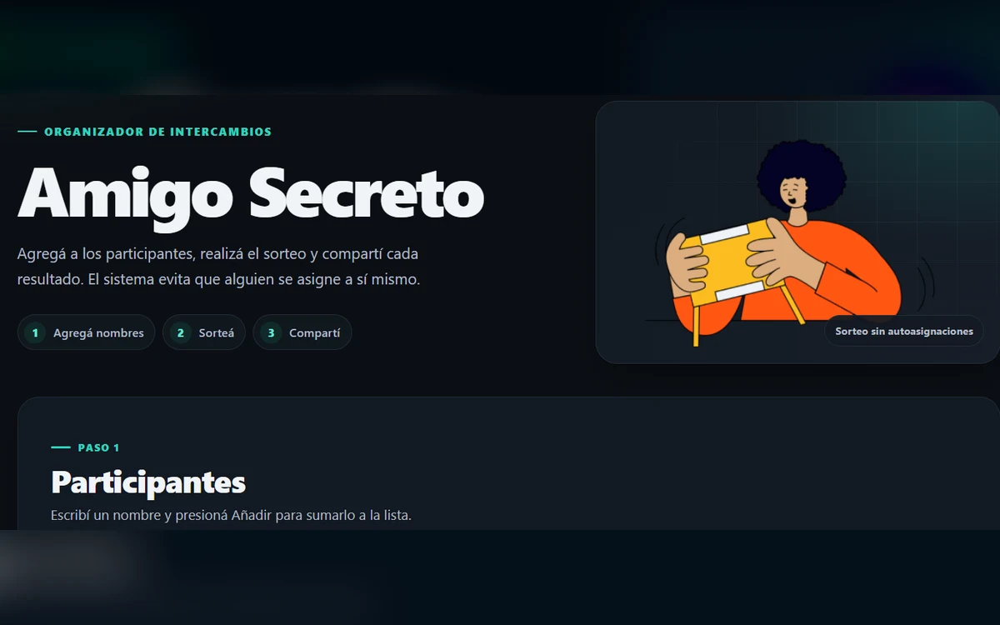
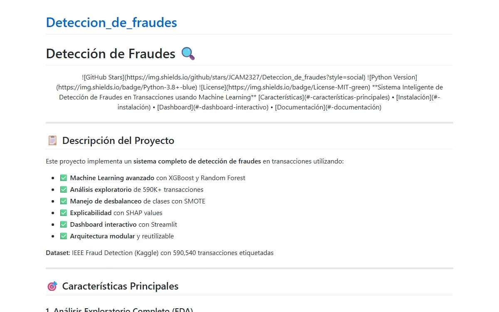
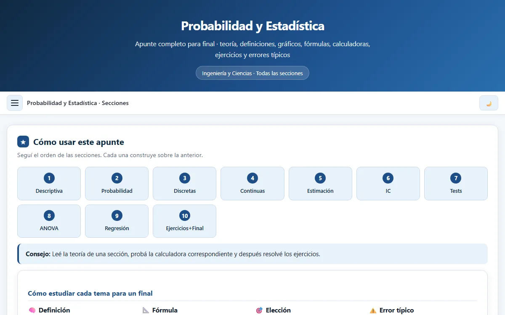

Sitio en construcción · contenido pendiente de confirmación
Hola, soy José.
Hola, soy José.
Construyo puentes entre disciplinas.
Explorando ciencia, datos y tecnología
Portfolio personal de José Carlos Alayo Mondragón. Reúne las áreas que quiero conectar —desarrollo web, datos e inteligencia artificial, ciencias, ingeniería e industria, y educación con tecnología— mientras el contenido se verifica y se publica de forma honesta.
7
áreas de interés declaradas
24
proyectos en el catálogo
8
demos y sitios publicados
2
datos clave pendientes: perfil y formación
Sobre mí
Una trayectoria en construcción, contada sin atajos.
Soy José Carlos Alayo Mondragón. Este espacio nace para conectar la formación académica, la práctica técnica y el aprendizaje continuo en un mismo lugar: un portfolio que explique qué sé hacer, cómo pienso y qué estoy construyendo.
La biografía definitiva y los detalles de mi trayectoria están pendientes de confirmación. No publico logros, títulos ni experiencia hasta poder respaldarlos con información verificada.
Contenido pendiente de confirmación. Esta sección se completará
con información verificada y con el nivel de detalle que la persona autora decida
hacer público.
- Desarrollo frontend
- Desarrollo backend
- Datos e IA
- Química y ciencias
- Ingeniería e industria
- Educación y tecnología
- Proyectos interdisciplinarios
Principio de trabajo
“Conectar conocimientos para resolver problemas reales, sin exagerar lo que todavía está en proceso.”
Regla del proyecto: nada de datos inventados. Cada afirmación debe poder verificarse o marcarse como pendiente.
Enfoque
Líneas de trabajo que conectan disciplinas.
Estas preguntas guían mi aprendizaje y mi práctica. Los proyectos concretos están en el catálogo, con su estado real y sus enlaces públicos.
01 / datos
Datos que ayuden a decidir
¿Cómo pasar de datos dispersos a decisiones defendibles?
En exploración
Ver proyectos
02 / web
Herramientas web claras
¿Cómo construir interfaces que expliquen lo complejo sin ruido?
En uso en este sitio
Ver proyectos
03 / ciencia
Ciencia aplicada a la industria
¿Cómo conectar química, física e ingeniería con software útil?
En exploración
Ver proyectos
Cada proyecto declara su estado (idea, en desarrollo, MVP, publicado…) y sus enlaces públicos. Las portadas que faltan se agregarán cuando existan imágenes verificables.
Proyectos
Catálogo de proyectos públicos.
24 proyectos organizados por área, con su estado real y enlaces verificados. Algunas portadas todavía están pendientes de imagen.
Desarrollo frontend



LOBO STORE
Sitio web para una tienda de ropa y calzado con diseño urbano, catálogo y contacto por WhatsApp.
AluraF
Challenge de Alura Latam: aplicación frontend con componentes, contextos y estilos propios.
AluraGeek
Challenge de AluraGeek de Alura Latam: catálogo web construido con HTML, CSS y JavaScript.
Challenge Portfolio
Challenge de portafolio de Alura Latam: página personal responsive con HTML y CSS.

Desarrollo backend
Datos e inteligencia artificial

The Spotify Project Models
Modelos de machine learning para explicar y predecir la intensidad musical en canciones.
Data Cleaning Sales Pipeline
Pipeline en Python para limpiar transacciones de ventas y generar reportes y gráficos.
Geospatial ML
Repositorio inicial de un proyecto de machine learning geoespacial; contenido y alcance pendientes.
Química y ciencias
Automatización de rendimiento en reacciones
Aplicación en Streamlit para calcular y visualizar el rendimiento de síntesis químicas.
Educación y tecnología

R-Book
Proyecto en desarrollo de un lector inteligente con Python; alcance y funcionalidades pendientes.
Ejercicios de Python para ciencia de datos
Ejercicios de Python para ciencia de datos del curso de LinkedIn Learning.
Formación
Datos académicos pendientes de verificación.
La formación se publicará con institución, programa, nivel, estado y fechas reales. Los estudios incompletos o en curso se mostrarán como tales, nunca como títulos obtenidos.
Si necesitás información académica antes de que esta sección esté completa, el canal correcto será el de contacto profesional cuando esté configurado.
Pendiente de confirmación
Formación académica
No se presentan títulos, certificaciones ni instituciones hasta contar con la información verificada y la autorización para publicarla.
Habilidades
Herramientas y temas de interés.
Sin porcentajes ni niveles inventados. Esta lista describe el entorno de trabajo y los temas que quiero seguir profundizando.
Desarrollo web
En uso- HTML
- CSS
- JavaScript
- TypeScript
- React
- Next.js
- Tailwind CSS
Datos e IA
Interés- Python
- SQL
- Análisis de datos
- Visualización
- Aprendizaje automático
Ciencias
Interés- Química
- Física
- Matemáticas
- Método científico
Entorno y práctica
Base- Git
- GitHub
- VS Code
- Markdown / MDX
- Documentación
Contacto
Hablemos cuando los canales estén listos.
Podés explorar el trabajo público en GitHub. LinkedIn y email siguen pendientes de configuración y verificación: no se publican perfiles ni direcciones sin confirmación.